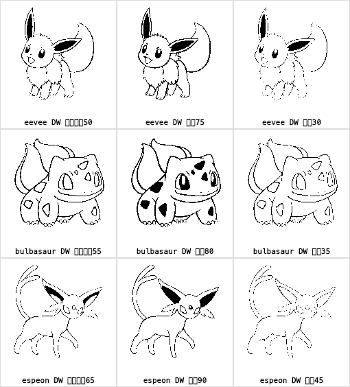
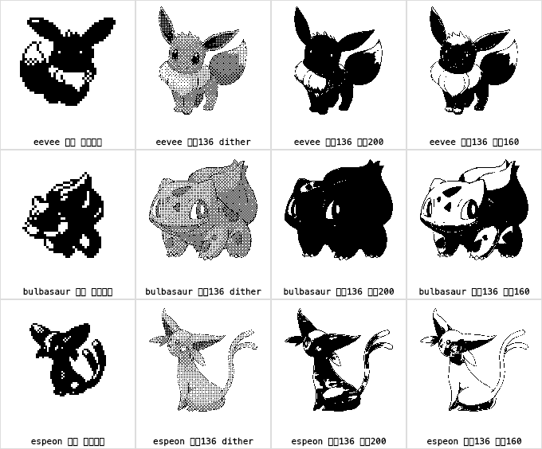
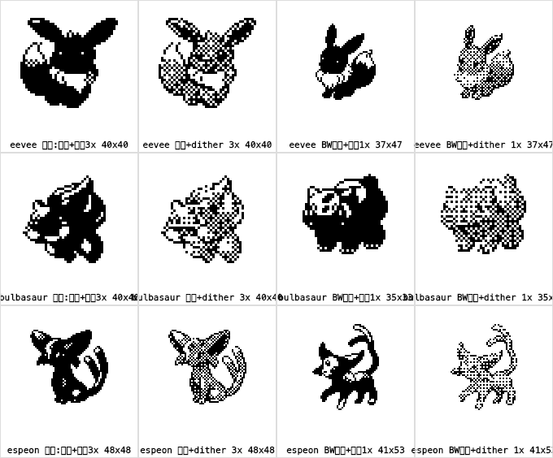

宝可梦精细化 · 1-bit 渲染方案对比
★ 最终方案：Dream World 矢量插画 → 目标分辨率直出 → 自动阈值线稿

扁平色块矢量源是质变点：纯色填充存在干净的阈值把描边与填色完全分开，
立绘的渐变则切哪里都出毛边。矢量在 136px 直出 + 2x 超采样 = 平滑无锯齿。
中列（自动阈值 +25 校准）为基准效果：眼睛/斑纹/耳廓细节全保留。
18 只中 17 只有 DW 源；仙子伊布（gen6 无 DW）用立绘管线兜底。
离线烘焙成品 1-bit PNG，运行时零改动，逐只过目后入库。
过程图：高清官方立绘 475px → 降到 136px → 二值化（已否决：仍偏粗糙）

列1 = 旧现状（40-56px 像素图硬阈值放大 3 倍）。列2 = 立绘 dither（偏灰）。
列3/4 = 立绘阈值 200/160——渐变源二值化毛边明显，被「太粗糙」否决，留档对比。
佐证图：为什么不是换"更大的像素源图"

gen5 黑白版画布虽是 96×96，但小型宝可梦的实际内容只有 ~37-50px（列3/4），
与金版同量级——像素时代源图没有"更细"的版本，这是物理上限，所以必须走高清立绘降采样。